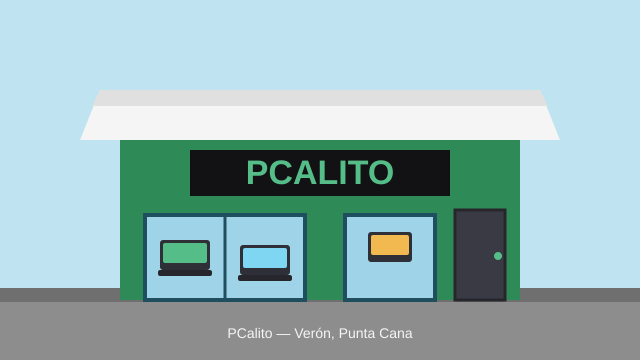

Servicios del taller
Lo que hacemos todos los días. El diagnóstico cuesta RD$ 500 y se rebaja si reparas con nosotros.
-
Reparación de laptops
- Pantallas, bisagras y carcasas
- Teclados, baterías y cargadores
- Puertos de carga y botones
-
Mantenimiento
- Limpieza interna y pasta térmica
- Formateo e instalación de Windows
- Actualización a disco SSD
-
Negocios
- Redes LAN y puntos de venta
- Cámaras de seguridad básicas
Top 5 de octubre: lo más vendido
Del puesto 5 al 1:
- Cargador universal de laptop
- Mouse gamer con luces
- Teclado mecánico económico
- Disco SSD de 512 GB
- Memoria RAM de 16 GB
Glosario de mostrador
Los términos que más preguntan en la tienda:
- NVMe
- El tipo de SSD más rápido: va directo a la placa madre, sin cable.
- Dual Channel
- Dos memorias RAM en par: la PC trabaja el doble de ancho y gana velocidad.
- Fuente 80 Plus
- Certificación de la fuente de poder: desperdicia menos electricidad y calienta menos.
- Pantalla IPS
- Panel con mejores colores y ángulos de visión que los TN comunes.
Precios del taller
| Categoría | Servicio | Precio (RD$) | Tiempo |
|---|---|---|---|
| Mantenimiento | Limpieza interna + pasta térmica | 1,200 | Mismo día |
| Formateo + Windows instalado | 1,800 | Mismo día | |
| Reparación | Cambio de pantalla de laptop | 4,000* | 2–4 días |
| Cambio de batería | 2,200* | 2–4 días | |
| Gaming | Ensamble de PC gamer a medida | 3,500 | 5–7 días |
| Diagnóstico | Evaluación con informe escrito | 500 | 1–2 horas |
| * Sin el repuesto: se cotiza aparte. | El diagnóstico se rebaja si reparas con nosotros. | ||
El local y cómo llegar
